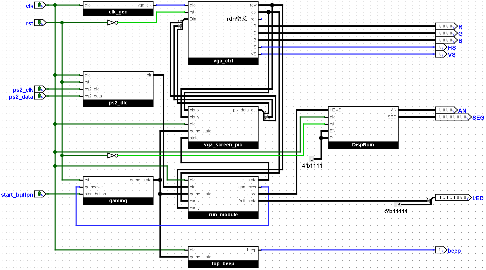
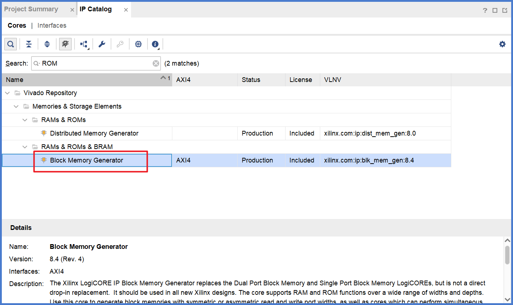
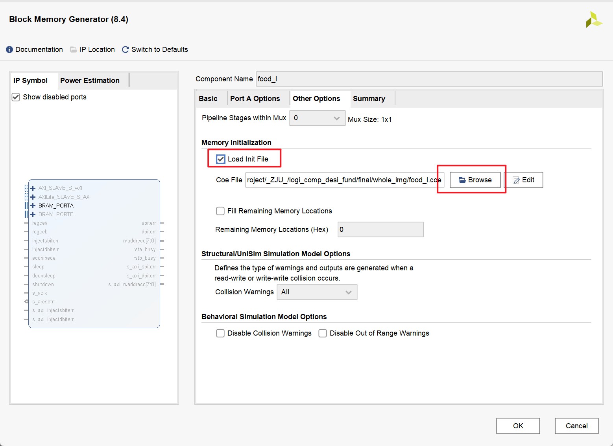
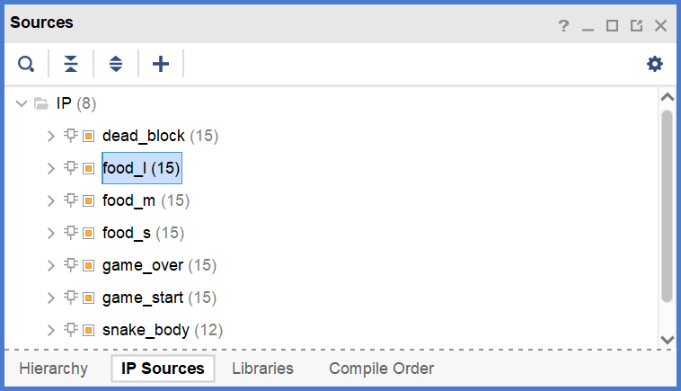

final
注意
具体的 verilog 代码同学们一定要先尝试自己完成，本文档仅作提示和参考作用
VGA 可能需要显示图片，图片的像素信息需要存储在 ROM 当中并生成 IP 核，具体如何操作？关于这种类型的问题，当然可以直接参考学习本文档的相关内容
我们组做的是“贪吃蛇”。我负责的是 VGA，蜂鸣器和部分运动模块，因此在这些内容方面会解释的详细一些
1 整体设计思路
参考：有晶科技FPGA开发板实现贪吃蛇游戏 FPGA交作业系列｜纯verilog实现的贪吃蛇游戏，交互效果甚好
采用 Top-Down 设计思路，由 top 模块来组织连接其他子模块，其中主要的功能模块有 Ps2, Run（运动模块）, VGA, State（状态机）, DispNum（数码管显示）, beep（蜂鸣器）。使用 IP 核来存储图片等数据
将 \(640 \times 480\) 的屏幕，以 \(16 \times 16\) 为单元格，划分为 \(40 \times 30\) 的区域
我们将每个单元格给予一个state状态值，分为 0: 背景格，1: 蛇头，2: 蛇身，3: Small_Food，4: Medium_Food，5: Large_Food，6: 死亡格
整体结构图（top.v）如下：

2 VGA设计思路
参考：基于rom的vga图像显示
整体结构图如下：
2.1 clk_gen模块
此模块助教已提供，产生 \(25MHz\) 的 \(clk\) 信号，用于 \(VGA\) 的运作
clk_gen.v module clk_gen (
input clk , // 100 MHz
output vga_clk // 25 MHz
);
reg [ 1 : 0 ] clkdiv ;
initial clkdiv = 2 'b0 ;
always @( posedge clk ) clkdiv = clkdiv + 2 'b1 ;
assign vga_clk = clkdiv [ 1 ];
endmodule
2.2 vga_ctrl模块
此模块助教已提供。接收像素点的色彩信息（\(Din\) ），输出当前像素点的坐标（\(row,col\) ）和 \(VGA\) 有关的变量（\(R,G,B,HS,VS\) ）
vga_ctrl.v module vga_ctrl (
input clk , // vga clk = 25 MHz
input rst ,
input [ 11 : 0 ] Din , // bbbb_gggg_rrrr, pixel
output reg [ 8 : 0 ] row , // pixel ram row address, 480 (512) lines
output reg [ 9 : 0 ] col , // pixel ram col address, 640 (1024) pixels
output reg rdn , // read pixel RAM(active_low)
output reg [ 3 : 0 ] R , G , B , // red, green, blue colors
output reg HS , VS // horizontal and vertical synchronization
);
// h_count: VGA horizontal counter (0~799)
reg [ 9 : 0 ] h_count ; // VGA horizontal counter (0~799): pixels
initial h_count = 10'h0 ;
always @ ( posedge clk ) begin
if ( rst ) h_count <= 10'h0 ;
else if ( h_count == 10 'd799 )
h_count <= 10'h0 ;
else h_count <= h_count + 10'h1 ;
end
// v_count: VGA vertical counter (0~524)
reg [ 9 : 0 ] v_count ; // VGA vertical counter (0~524): pixel
initial v_count = 10'h0 ;
always @ ( posedge clk or posedge rst ) begin
if ( rst ) v_count <= 10'h0 ;
else if ( h_count == 10 'd799 ) begin
if ( v_count == 10 'd524 ) v_count <= 10'h0 ;
else v_count <= v_count + 10'h1 ;
end
end
// signals, will be latched for outputs
wire [ 9 : 0 ] row_addr = v_count - 10 'd35 ; // pixel ram row addr
wire [ 9 : 0 ] col_addr = h_count - 10 'd143 ; // pixel ram col addr
wire h_sync = ( h_count > 10 'd95 ); // 96 -> 799
wire v_sync = ( v_count > 10 'd1 ); // 2 -> 524
wire read = ( h_count > 10 'd142 ) && // 143 -> 782
( h_count < 10 'd783 ) && // 640 pixels
( v_count > 10 'd34 ) && // 35 -> 514
( v_count < 10 'd525 ); // 480 lines
// vga signals
always @ ( posedge clk ) begin
row <= row_addr [ 8 : 0 ]; // pixel ram row address
col <= col_addr ; // pixel ram col address
rdn <= ~ read ; // read pixel (active low)
HS <= h_sync ; // horizontal synchronization
VS <= v_sync ; // vertical synchronization
R <= rdn ? 4'h0 : Din [ 3 : 0 ]; // 3-bit red
G <= rdn ? 4'h0 : Din [ 7 : 4 ]; // 3-bit green
B <= rdn ? 4'h0 : Din [ 11 : 8 ]; // 2-bit blue
end
endmodule
建议结合 VGA 显示原理看明白上述代码，有利于更好的理解下面 vga_screen_pic 模块
代码块49-51行注释解释
3 bit red，3 bit green，2 bit blue 意思是我们输入的数据 Din，经过接口到达 VGA 显示时，会取 R 通道 4 bit 数据的高 3 位，取 G 通道 4 bit 数据的高 3 位，取 B 通道 4 bit 数据的高 2 位，作为最终显示的颜色值
更加详细严谨的内容，浏览器搜索 rgb332
2.3 vga_screen_pic模块
核心模块，输出当前像素点的色彩信息并提供给 \(vga\_ctrl\) 模块
2.3.1 IP核的生成
图片制作
部分图片是由 \(AI\) 生成并使用 \(PS\) 进行一定处理后产生。
游戏开始画面
图像分辨率：\(640 \times 480\)
游戏结束画面
图像分辨率：\(640 \times 480\)
游戏中画面
蛇的身体：
图像分辨率：\(16 \times 16\)
蛇的头部：
图像分辨率：\(16 \times 16\)
死亡格：
图像分辨率：\(16 \times 16\)
小食物：
图像分辨率：\(16 \times 16\)
中食物：
图像分辨率：\(16 \times 16\)
大食物：
图像分辨率：\(16 \times 16\)
图片处理
参考：VGA显示图像 详细总结 ，原文部分地方有误，本文档已修改
所有图片导出为24位 \(.bmp\) 文件，并使用 \(Matlab\) 将其转换为符合格式的 \(.coe\) 文件。
Matlab 下载：浙江大学校园正版化软件平台
PS 导出为 .bmp 文件
PS 下载：浙江大学校园正版化软件平台
PS打开目标图片，选择 文件 -> 存储副本
选择 .bmp 类型，选择文件保存位置，点击 保存
文件格式 选择 Windows ，深度 选择 24位 ，点击 确定
转换函数如下：
img2coe.m function img2coe ( path,name)
% 利用imread函数把图片转化为一个三维矩阵
image_array = imread ( path );
% 利用size函数把图片矩阵的三个维度大小计算出来
% 第一维为图片的高度，第二维为图片的宽度，第三维为图片的RGB分量
[ height , width , z ]= size ( image_array );
red = image_array (:,:, 1 ); % 提取红色分量，数据类型为uint8
green = image_array (:,:, 2 ); % 提取绿色分量，数据类型为uint8
blue = image_array (:,:, 3 ); % 提取蓝色分量，数据类型为uint8
% 把上面得到了各个分量重组成一个1维矩阵，由于reshape函数重组矩阵的
% 时候是按照列进行重组的，所以重组前需要先把各个分量矩阵进行转置以后再重组
% 利用reshape重组完毕以后，由于后面需要对数据拼接，所以为了避免溢出
% 这里把uint8类型的数据扩大为uint32类型
r = uint32 ( reshape ( red ' , 1 , height * width ));
g = uint32 ( reshape ( green ' , 1 , height * width ));
b = uint32 ( reshape ( blue ' , 1 , height * width ));
% 初始化要写入.coe文件中的RGB颜色矩阵
rgb = zeros ( 1 , height * width );
% 因为导入的图片是24-bit真彩色图片，每个像素占用24-bit，其中RGB分别占用8-bit
% 而我这里需要的是12-bit，其中R为4-bit，G为4-bit，B为4-bit，所以需要在这里对24-bit的数据进行重组与拼接
% bitshift()函数的作用是对数据进行移位操作，其中第一个参数是要进行移位的数据，第二个参数为负数表示向右移，为
% 正数表示向左移，更详细的用法直接在Matlab命令窗口输入 doc bitshift 进行查看
% 所以这里对红色分量先右移4位取出高4位，然后左移8位作为ROM中RGB数据的第11-bit到第8-bit
% 对绿色分量先右移4位取出高4位，然后左移4位作为ROM中RGB数据的第7-bit到第4-bit
% 对蓝色分量先右移4位取出高4位，然后左移0位作为ROM中RGB数据的第3-bit到第0-bit
for i = 1 : height * width
rgb ( i ) = bitshift ( bitshift ( r ( i ), - 4 ), 8 ) + bitshift ( bitshift ( g ( i ), - 4 ), 4 ) + bitshift ( bitshift ( b ( i ), - 4 ), 0 );
end
fid = fopen ( name , 'w+' );
% .coe文件的最前面一行必须为这个字符串，其中16表示16进制
fprintf ( fid , 'memory_initialization_radix=16;\n' );
% .coe文件的第二行必须为这个字符串
fprintf ( fid , 'memory_initialization_vector =\n' );
% 把rgb数据的前 height*width-1 个数据写入.coe文件中，每个数据之间用逗号隔开
fprintf ( fid , '%x,\n' , rgb ( 1 : end - 1 ));
% 把rgb数据的最后一个数据写入.coe文件中，并用分号结尾
fprintf ( fid , '%x;' , rgb ( end ));
fclose ( fid ); % 关闭文件指针
end
matlab 转换为 .coe 文件
打开某一文件夹，在左边工作区右键，新建 \(img2coe.m\) 函数文件
将上述代码复制粘贴到 \(img2coe.m\) 文件中
将目标图片复制粘贴至与 \(img2coe.m\) 文件同一目录下，在下方 命令行窗口 输入 img2coe('{filename}.bmp', '{filename}.coe'); ，例如 img2coe('game_start.bmp', 'game_start.coe');，即可在同一目录下生成 .coe 文件
生成的 \(.coe\) 文件格式如下（拿 \(food\_l.coe\) 举例）：
food_l.coe f92,
打开 PS，选择 颜色取样工具 ，在图中左键单击可添加标记点，左键单击右侧 信息 栏中标记点的下三角图标，选择 Web颜色 ，即可对数据进行检验。例如标记如图 6 个点，数据信息和 .coe 文件数据相同。PS 中 R、G、B 三个通道的数值均为 8 bit，.coe 文件中为 4 bit，取 PS 中各通道显示数据的最高一位，即和 .coe 文件中的数据相同。例如标记点3，PS 中 R、G、B 分别为 F4、9D、21，各取最高一位即为 .coe 文件中的数据 f92 （上方代码块第 12 行）
生成IP核
利用 \(vivado\) 生成IP核，导入 \(.coe\) 文件，选择生成 \(ROM\)
vivado 生成 ROM
打开项目工程文件，点击左侧的 IP Catalog ，搜索 ROM，双击 Distributed Memory Generator
Distributed Memory Generator 会生成不包含时钟信号的存储器，Block Memory Generator 会生成包含时钟信号的存储器 (1) ，我们组的实现方案不需要时钟信号，因此选择生成 Distributed Memory Generator

图中的工程文件是我随便找的，用来截图做示范的，所以图中的源文件不需要关注
可以重命名模块名称，设置 Depth 为 256（因为此图片共 256 个像素点），设置 Data Width 为 12（因为每个像素点的颜色数据为 12 bit）。类似的，如果是 game_start 这张图片，Depth 应设置为 640 x 480 = 307200，Data Width 仍为 12。Memory Type 选择 ROM
上方选项卡选择 RST & Initialization，点击红框中的按钮加载 .coe 文件

选择刚才生成的 .coe 文件
完成后点击 OK
这里建议选择 Out of context per IP ，点击 Generate
完成后，可以在 IP sources 这里找到刚才生成的 IP 核

图中的工程文件是我随便找的，用来截图做示范的，所以图中的源文件不需要关注
有无时钟信号确实是一个区别，但是主要区别并不是有无时钟信号
2.3.2 IP核的调用
模块接口以及变量定义与初始化：
需要说明的是，输入变量 \(state\) 由 \(run\_module\) 模块根据当前像素点坐标得到并提供。
vga_screen_pic.v module vga_screen_pic (
input [ 9 : 0 ] pix_x , // 像素点 x 坐标
input [ 8 : 0 ] pix_y , // 像素点 y 坐标
input clk , // 100 MHz
input [ 1 : 0 ] game_state , // 游戏状态
input [ 2 : 0 ] state , // 当前单元格的状态
// 0 背景 1 蛇头 2 蛇身 3 小食物 4 中食物 5 大食物 6 死亡格
output reg [ 11 : 0 ] pix_data_out // 色彩信息
);
parameter H_PIC = 10 'd16 , // 小图片高度
SCREEN_W_PIC = 19 'd640 ; // VGA 宽度
parameter BLACK = 12'h000 , // 背景
GREEN = 12'h0f0 , // 蛇头（暂时替代）
YELLOW = 12'hff0 , // 蛇身（暂时替代）
RED = 12'hf00 , // 死亡格（暂时替代）
BLUE = 12'h00f ; // 食物（暂时替代）
wire [ 7 : 0 ] pic_romaddr0 ; // 小图片的 ROM 地址
wire [ 18 : 0 ] pic_romaddr1 ; // 大图片的 ROM 地址
wire [ 11 : 0 ] snake_head_data , snake_body_data ,
food_s_data , food_m_data , food_l_data ,
dead_block_data , game_start_data , game_over_data ; // 各个 ROM 里的数据信息
代码解释
第 15-18 行，当时蛇头等图片还没弄好，因此暂时用纯色方块替代，便于做测试
定义了两个函数，用于计算当前像素点所在的单元格的左上角坐标，便于计算相应的地址信息从而获得相应的色彩信息。
vga_screen_pic.v function [ 9 : 0 ] cell_x ; // 计算像素点对应单元格的左上角 x 坐标
input [ 9 : 0 ] pix_x ;
begin
cell_x = ( pix_x >> 4 ) * H_PIC ; // 除以 16 并乘以图片的高度
end
endfunction
function [ 8 : 0 ] cell_y ; // 计算像素点对应单元格的左上角 y 坐标
input [ 8 : 0 ] pix_y ;
begin
cell_y = ( pix_y >> 4 ) * H_PIC ;
end
endfunction
计算两个 \(ROM\) 地址变量的值：
vga_screen_pic.v assign pic_romaddr0 = ( pix_x - cell_x ( pix_x )) + ( pix_y - cell_y ( pix_y )) * H_PIC ;
assign pic_romaddr1 = pix_x + pix_y * SCREEN_W_PIC ; // 大图片的宽度和 VGA 的宽度相同
代码解释
ROM 中存储的是像素点颜色信息，顺序是像素点从左到右，从上到下，依次存储在 ROM 当中，因此需要按照上面的公式计算出，当前像素点的颜色信息所对应的 ROM 地址
IP 核的调用：
vga_screen_pic.v food_l food_l0 (
. a ( pic_romaddr0 ), // 注意此图片（16 x 16）使用 pic_romaddr0
. spo ( food_l_data )
);
-- snip --
game_start game_start0 (
. a ( pic_romaddr1 ), // 注意此图片（640 x 480）使用 pic_romaddr1
. spo ( game_start_data )
);
-- snip --
如何查看 IP 核接口
在 IP Sources 展开相应的 IP 核，双击打开 .veo 文件
图中的工程文件是我随便找的，用来截图做示范的，所以图中的源文件不需要关注
这里给出了调用代码示例，可以直接复制粘贴使用
图中的工程文件是我随便找的，用来截图做示范的，所以图中的源文件不需要关注
计算正确的色彩信息：
vga_screen_pic.v always @( posedge clk ) begin
case ( game_state ) // 判断游戏状态
2 'd0 : pix_data_out <= game_start_data ; // 0 即游戏待开始，色彩信息为 game_start 图片
2 'd1 : begin // 1 即游戏进行中
case ( state ) // 判断单元格的状态
3 'd0 : pix_data_out <= BLACK ; // 0 即背景格，为黑色
3 'd1 : pix_data_out <= snake_head_data ; // 1 即蛇头部
3 'd2 : pix_data_out <= snake_body_data ; // 2 即蛇身部
3 'd3 : pix_data_out <= food_s_data ; // 3 即小食物
3 'd4 : pix_data_out <= food_m_data ; // 4 即中食物
3 'd5 : pix_data_out <= food_l_data ; // 5 即大食物
3 'd6 : pix_data_out <= dead_block_data ; // 6 即死亡格
default : pix_data_out <= BLACK ; // 其他状态设置为黑色
endcase
end
2 'd2 : pix_data_out <= game_over_data ; // 2 即游戏结束
default : pix_data_out <= BLACK ; // 其他状态设置为黑色
endcase
end
3 蜂鸣器设计思路
参考：无源蜂鸣器驱动实验
整体结构图（top_beep.v）如下：
3.1 蜂鸣器原理
我们板子 (1) 的蜂鸣器是无源蜂鸣器，因其内部不带震荡源，所以需要PWM方波才能驱动其发声
型号：xc7k160tffg676-2L
PWM方波的 频率 决定声音的音调，PWM方波的 占空比 决定声音的响度。所以只需产生不同频率和占空比的PWM方波去驱动无源蜂鸣器，就能让无源蜂鸣器发出想要的声音序列了
3.2 实现步骤
3.2.1 游戏开始音乐
选择合适的音乐，扒谱：
这部分你只需要知道歌曲的 bpm 是多少，每个音是什么，每个音持续多长时间。所以不想扒谱也可以找有简谱或五线谱的歌曲，扒谱可以浏览器搜索扒谱网站
图中使用的软件是 FL Studio，可以下载免费试用版 ，使用时间不受限制，但功能受限制。FL Studio 是一个编曲软件，想下载下来玩的话建议去 英文官网 上下载
实现原理波形图如下：
我们的 \(clk\) 频率为 \(100MHz\) ，周期为 \(10ns\) ，该音乐的 bpm 为 120 (1) ，\(\frac{4}{4}\) 拍 (2) 。每过两拍（即每过 8 个 16 分音符），时间过去1s。以 1 个 16 分音符的长度为 单位时间 ，即 \(\frac{1}{8}=0.125s=125ms\) ，包括了 \(\frac{0.125}{10\times10^{-9}}=12500000\) 个 \(clk\) 周期。以 \(A4\) 音为例，该音调的频率为 \(440Hz\) ，其音波周期为 \(\frac{1}{440} = 2272727ns\) ，包括了 \(\frac{2272727}{10}=227273\) 个 \(clk\) 周期。其他音同理。
120 bpm：每分钟 120 拍，即每秒 2 拍
以 4 分音符为 1 拍，每小节有 4 拍
接下来将结合实现原理波形图和代码进行详细解释。
模块接口和变量的定义和初始化：
beep_gamestart.v module beep_gamestart (
input clk ,
input [ 1 : 0 ] game_state , // 游戏状态变量
output reg beep
);
reg rst ;
reg [ 23 : 0 ] cnt ; // 用于计数的信号
reg [ 19 : 0 ] freq_cnt ; // 音调频率计数
reg [ 5 : 0 ] cnt_125ms ; // 125ms个数计数
reg [ 19 : 0 ] freq_data ; // 音调频率
wire [ 19 : 0 ] duty_data ; // 占空比
initial begin // 初始化所有 reg 信号
rst = 1 'b0 ;
beep = 1 'b0 ;
cnt = 24 'b0 ;
freq_cnt = 20 'b0 ;
cnt_125ms = 6 'b0 ;
freq_data = 20 'b0 ;
end
parameter TIME_125ms = 24 'd12499999 , // 125 ms
A4 = 19 'd227273 , // 440 Hz
D5 = 19 'd170357 , // 587
C5 = 19 'd191204 , // 523
B4 = 19 'd202428 , // 494
FS_4 = 19 'd270269 , // 370
G4 = 19 'd255101 , // 392
D4 = 19 'd378787 , // 264
E4 = 19 'd303030 , // 330
F4 = 19 'd286532 , // 349
C4 = 19 'd381678 ; // 262
代码解释
第 25 - 34 行的数据计算方法上面有提到。以 \(A4\) 音为例，该音调的频率为 \(440Hz\) ，其音波周期为 \(\frac{1}{440} = 2272727ns\) ，包括了 \(\frac{2272727}{10}=227273\) 个 \(clk\) 周期，所以 A4 = 19'd227273。 其他音同理。
完整版的音符与频率对照表
我们选择占空比为 \(50\%\) 的PWM方波：
beep_gamestart.v assign duty_data = freq_data >> 1 'b1 ;
根据游戏状态信号调整 \(rst\) 信号：
beep_gamestart.v always @( game_state ) begin
if ( game_state == 2 'b00 ) begin // 游戏开始页面
rst = 1 'b0 ; // rst 为 0 时，声波正常产生
end else begin
rst = 1 'b1 ; // rst 为 1 时，声波不产生
end
end
\(cnt\) 的调整：
beep_gamestart.v always @( posedge clk or posedge rst ) begin
if ( rst ) begin
cnt <= 24 'd0 ;
end else if ( cnt == TIME_125ms ) begin // 每当 cnt 达到 TIME_125ms 即每过 1 个单位时间，该变量重置为 0 重新开始计数
cnt <= 24 'd0 ;
end else begin
cnt <= cnt + 1 'b1 ;
end
end
代码解释
上面有提到过，以 1 个 16 分音符的长度作为单位时间
注：testbench 文件中修改了某些参数的值，以此来减少仿真时间。例如 TIME_125ms 在 testbench 文件中改为 1249
\(cnt\_125ms\) 的调整：
beep_gamestart.v always @( posedge clk or posedge rst ) begin
if ( rst ) begin
cnt_125ms <= 6 'd0 ;
end else if ( cnt == TIME_125ms && cnt_125ms == 7 'd64 ) begin // 音乐播放结束时，重置为 0 ，实现循环播放音乐
cnt_125ms <= 6 'd0 ;
end else if ( cnt == TIME_125ms ) begin // 每过 1 个时间单位，变量值加 1
cnt_125ms <= cnt_125ms + 1 'b1 ;
end
end
代码解释
该歌曲时长为 64 个 16 分音符，所以 cnt_125ms == 7'd64
\(freq\_cnt\) 的调整：
beep_gamestart.v always @( posedge clk or posedge rst ) begin
if ( rst ) begin
freq_cnt <= 19 'd0 ;
end else if ( freq_cnt >= freq_data || cnt == TIME_125ms ) begin // 当频率计数信号大于此时的声音频率，或每当过 1 个时间单位时，该值重置为 0
freq_cnt <= 19 'd0 ;
end else begin
freq_cnt <= freq_cnt + 1 'b1 ;
end
end
代码解释
\(freq\_cnt\) 与下面的代码块一起理解
\(beep\) 的调整：
beep_gamestart.v always @( posedge clk or posedge rst ) begin
if ( rst ) begin
beep <= 1 'b0 ;
end else if ( freq_cnt > duty_data ) begin // 当频率计数信号大于占空比时，使 PWM 为 1，实现 50% 的占空比
beep <= 1 'b1 ;
end else begin
beep <= 1 'b0 ;
end
end
\(freq\_data\) 的调整：
beep_gamestart.v always @( posedge clk or posedge rst ) begin
if ( rst ) begin
freq_data <= 19 'd0 ;
end else begin
case ( cnt_125ms ) // 根据不同的时间段，为该变量赋值不同的频率值
7 'd0 : freq_data <= A4 ; // 第 1 个单位时间为 A4 音
7 'd1 : freq_data <= A4 ;
7 'd2 : freq_data <= A4 ;
7 'd3 : freq_data <= A4 ;
7 'd4 : freq_data <= D5 ; // 第 5 个单位时间为 D5 音
7 'd5 : freq_data <= D5 ;
7 'd6 : freq_data <= A4 ;
7 'd7 : freq_data <= A4 ;
7 'd8 : freq_data <= C5 ; // 第 9 个单位时间为 C5 音
7 'd9 : freq_data <= C5 ;
-- snip --
7 'd62 : freq_data <= D4 ;
7 'd63 : freq_data <= D4 ;
default : freq_data <= 19 'd0 ;
endcase
end
end
3.2.2 游戏结束音乐
和游戏开始音乐的实现相同，不同的点在于游戏结束音乐只需要播放一次。可以调整 \(cnt\_125ms\) 实现播放一次。
beep_gameover.v always @( posedge clk or posedge rst ) begin
if ( rst ) begin
cnt_125ms <= 6 'd0 ;
end else if ( cnt == TIME_125ms && cnt_125ms <= 6 'd33 ) begin
cnt_125ms <= cnt_125ms + 1 'b1 ;
end // 当音乐播放结束后，不再重置为 0，实现只播放一次
end
beep_gameover.v always @( posedge clk or posedge rst ) begin
if ( rst ) begin
freq_data <= 18 'd0 ;
end else begin
case ( cnt_125ms )
5 'd0 : freq_data <= 18 'd0 ;
5 'd1 : freq_data <= 18 'd0 ;
5 'd2 : freq_data <= 18 'd0 ;
5 'd3 : freq_data <= 18 'd0 ;
5 'd4 : freq_data <= AS_4 ;
5 'd5 : freq_data <= AS_4 ;
5 'd6 : freq_data <= AS_4 ;
5 'd7 : freq_data <= AS_4 ;
5 'd10 : freq_data <= A4 ;
5 'd11 : freq_data <= A4 ;
5 'd12 : freq_data <= A4 ;
5 'd13 : freq_data <= A4 ;
5 'd16 : freq_data <= GS_4 ;
5 'd17 : freq_data <= GS_4 ;
5 'd18 : freq_data <= GS_4 ;
5 'd22 : freq_data <= G4 ;
5 'd23 : freq_data <= G4 ;
5 'd24 : freq_data <= G4 ;
5 'd25 : freq_data <= G4 ;
5 'd26 : freq_data <= G4 ;
5 'd27 : freq_data <= G4 ;
5 'd28 : freq_data <= G4 ;
5 'd29 : freq_data <= G4 ;
5 'd30 : freq_data <= G4 ;
5 'd31 : freq_data <= G4 ;
5 'd32 : freq_data <= G4 ;
5 'd33 : freq_data <= G4 ;
default : freq_data <= 18 'd0 ;
endcase
end
end
提示
如果没有看太明白，可以多看几遍，注意观察两张仿真波形图的整体截图，有助于理解
或者可以看看我当时参考的文档：无源蜂鸣器驱动实验
3.2.3 top_beep 模块
top_beep.v module top_beep (
input clk ,
input [ 1 : 0 ] game_state ,
output reg beep
);
wire beep_start ;
wire beep_over ;
initial begin
beep = 1 'b0 ;
end
beep_gamestart bp_gs (. clk ( clk ), . game_state ( game_state ), . beep ( beep_start )); // 调用两个模块
beep_gameover bp_go (. clk ( clk ), . game_state ( game_state ), . beep ( beep_over ));
always @( posedge clk ) begin
if ( game_state == 2 'b00 ) begin
beep = beep_start ; // 游戏待开始状态，beep 为 game_start
end else if ( game_state == 2 'b10 ) begin
beep = beep_over ; // 游戏结束状态，beep 为 game_over
end
end
endmodule
4 PS2 设计思路
参考：PS/2协议的verilog HDL实现
整体结果图（ps2_dlc.v）如下：
4.1 运行原理
PS/2 通信协议是一种双向同步串行通信协议。通信的两端通过 CLOCK(时钟脚)同步，并通过国 DATA(数据脚)交换数据。一般两设备间传输数据的最大时钟频率是 33kHz，大多数 PS/2 设备工作在 10--20kHz。推荐值在 15kHz 左右，也就是说，CLOCK 高、低电平的持续时间都为 40us。每一数据帧包含 11—12 位，具体含义如下图示
数据
含义
1个起始位
总是逻辑 0
8个数据位
(LSB)地位在前
1 个奇偶校验位
奇校验
1 个停止位
总是逻辑 1
1 个应答位
仅用在主机对设备的通信中
PS/2 到主机的通信时序如下图所示。数据在 PS/2 时钟的下降沿读取，PS/2 的时钟频率为 10—16.7kHz。对于 PS/2 设备，一般来说从时钟脉冲的上升沿到一个数据转变的时间至少要有 5us；数据变化到下降沿的时间至少要有 5us，并且不大于 25us，这个时序非常重要应该严格遵循。主机可以再第 11 个时钟脉冲停止位之前把时钟线拉低，使设备放弃发送当前字节，当然这种情况比较少见。在停止位发送后设备在发送下个包前应该至少等待 50us，给主机时间做相应的处理。不主机处理接收到的字节时一般会抑制发送(主机在收到每个包时通常自动做这个)。在主机释放抑制后，设备至少应该在发送任何数据前等 50us
该程序中我们需要用到上下左右四个按键，对应ps2键盘的通码表进行代码编写
4.2 代码思路
4.2.1 输入输出信号
ps2.v module ps2 (
input clk ,
input rst ,
input ps2_clk ,
input ps2_data ,
output reg [ 8 : 0 ] data
);
reg [ 1 : 0 ] clk_state ;
reg [ 3 : 0 ] r_state ; // 计时
reg [ 7 : 0 ] r_data ; // 存储临时数据
reg f , e ; //是否特殊数据
wire neg ; // 探测ps2_clk的负边沿
assign neg = ~ clk_state [ 0 ] & clk_state [ 1 ];
always @( posedge clk or negedge rst ) //初始化clk_state
if ( ! rst )
clk_state <= 2 'b00 ;
else
clk_state <= { clk_state [ 0 ], ps2_clk };
always @( posedge clk or negedge rst ) begin //初始化数据
if ( ! rst ) begin
r_state <= 4 'b0000 ;
r_data <= 8 'b00000000 ;
f <= 1 'b0 ;
e <= 1 'b0 ;
data <= 9 'b000000000 ;
end
else if ( neg ) begin
if ( r_state > 4 'b1001 ) //读取完一整串数据后重置计时信号
r_state <= 4 'b0000 ;
else begin
if ( r_state < 4 'b1001 && r_state > 4 'b0 )
r_data [ r_state - 1 ] <= ps2_data ; //存入ps2_data
r_state <= r_state + 1 'b1 ;
end
end
else if ( r_state == 4 'b1010 &&| r_data ) begin
if ( r_data == 8'hf0 )
f <= 1 'b1 ;
else if ( r_data == 8'he0 )
e <= 1 'b1 ;
else
if ( f ) begin //代表断码，重置信号
data <= 9 'b0 ;
f <= 1 'b0 ;
e <= 1 'b0 ;
end
else if ( e ) begin //在data头部输入1代表已经接受e信号
e <= 1 'b0 ;
data <= { 1 'b1 , r_data };
end
else
data <= { 1 'b0 , r_data };
r_data <= 8 'b00000000 ;
end
end
endmodule
4.2.2 转化为方向信息以及实现键盘防抖动
ps2.dlc.v //防抖动以及输出上下左右
module ps2_dlc (
input clk ,
input rst ,
input ps2_clk ,
input ps2_data ,
output reg [ 1 : 0 ] dir //direction:00up;01down;10left;11right
);
wire [ 8 : 0 ] data ;
reg [ 7 : 0 ] all ; //[1:0]all 为11代表是up [3:2]代表down.....
ps2 ps2 (
. clk ( clk ),
. rst ( rst ),
. ps2_clk ( ps2_clk ),
. ps2_data ( ps2_data ),
. data ( data )
);
initial begin
all <= 8 'b00000000 ;
dir <= 2 'b11 ;
end
always @( posedge clk or negedge rst ) begin
if ( ! rst ) begin
all <= 8 'b00000000 ;
end
else begin
all [ 1 : 0 ] <= { all [ 0 ], data == 9'h175 }; //防抖动，连续输入两次才可以读入信号
all [ 3 : 2 ] <= { all [ 2 ], data == 9'h172 };
all [ 5 : 4 ] <= { all [ 4 ], data == 9'h16b };
all [ 7 : 6 ] <= { all [ 6 ], data == 9'h174 };
end
end
always @( posedge clk or negedge rst ) begin
if ( ! rst )
dir <= 2 'b11 ;
else begin
case ( all ) //根据all数值输出方向信息
8 'b00000011 : dir <= 2 'b00 ;
8 'b00001100 : dir <= 2 'b01 ;
8 'b00110000 : dir <= 2 'b10 ;
8 'b11000000 : dir <= 2 'b11 ;
default : ;
endcase
end
end
endmodule
5 状态机设计思路
整体结果图（gaming.v）如下：
gaming.v module gaming (
input rst ,
input gameover ,
input start_button ,
output reg [ 1 : 0 ] game_state
);
initial begin
game_state = 2 'd0 ; //初始化为开始界面
end
always @( negedge rst or posedge gameover or posedge start_button ) begin
if ( rst == 1 'b0 ) begin
game_state <= 2 'd0 ;
end
else if ( start_button == 2 'b1 ) begin
game_state <= 2 'd1 ;
end
else if ( gameover == 2 'b1 ) begin
game_state <= 2 'd2 ;
end
end
endmodule
设定游戏有3个状态分别是：
2'b00：开始界面状态2'b01：游玩中2‘b10：游戏结束
游戏初始化为 开始界面 状态，在游戏开始按钮start_button置 1 时，会切换为 游玩中 状态；当游戏结束，从运动模块中传入的gameover信号置 1，游戏进入 结束 状态；当再按下start_button时即可恢复游戏状态为 游玩中 ，继续游戏
6 运动模块设计思路
整体结构图（run_module.v）如下：
6.1 IO 信号代码
run_module.v module run_module (
input clk , //100MHZ
input [ 1 : 0 ] dir , //按下的运动方向
input [ 1 : 0 ] game_state , //游戏状态：0 开始界面， 1 游戏中， 2 结束界面
input [ 9 : 0 ] cur_x , // VGA当前X坐标
input [ 8 : 0 ] cur_y , // VGA当且Y坐标
output [ 2 : 0 ] one_state , //(X,Y)坐标对应
output reg gameover , //传出游戏结束的信息
output reg [ 15 : 0 ] score //得分
);
在划分后的 \(40 \times 30\) 的区域上进行蛇的移动
通过传入 \(dir\) 信号来控制蛇移动的方向
\(game\_state\) 来判断当前游戏状态\(cur\_x,cur\_y,one\_state\) 来输出当前坐标所在单元格的状态信息\(gameover\) 传出游戏结束的信息\(score\) 传出当前的得分
6.2 定义代码
run_module.v parameter MAX_LENGTH = 100 ;
parameter MAX_CNT = 23 ;
reg [ 5 : 0 ] head_x ;
reg [ 4 : 0 ] head_y ; //蛇头的坐标
reg [ 5 : 0 ] next_head_x ;
reg [ 4 : 0 ] next_head_y ; //下一刻蛇头的坐标
reg [ 5 : 0 ] fruit_x ;
reg [ 4 : 0 ] fruit_y ; //食物坐标
reg [ 5 : 0 ] body_x [ MAX_LENGTH: 0 ];
reg [ 4 : 0 ] body_y [ MAX_LENGTH: 0 ]; //存储蛇身坐标的数组
reg [ 1 : 0 ] current_dir ; //当前蛇运动的方向
reg [ 2 : 0 ] state [ 0 : 39 ][ 0 : 29 ]; //所有单元的状态信息
reg [ 23 : 0 ] cnt ; //计数以分频
reg [ 1 : 0 ] state_pos ; //存储上一刻和当前的游戏状态
wire game_clk ; //游戏频率（速度）
integer length ;
integer i , j ;
assign game_clk = cnt [ MAX_CNT ];
assign one_state = state [ state_x_addr ( cur_x )][ state_y_addr ( cur_y )];
always @( posedge clk ) begin
cnt = cnt + 24 'b1 ;
end
//计算转换后的对应单元格坐标
function [ 5 : 0 ] state_x_addr ;
input [ 9 : 0 ] pix_x ;
begin
state_x_addr = pix_x >> 4 ; // x
end
endfunction
function [ 5 : 0 ] state_y_addr ;
input [ 8 : 0 ] pix_y ;
begin
state_y_addr = pix_y >> 4 ; // y
end
endfunction
6.3 初始化
run_module.v initial begin
cnt = 24 'b0 ;
state_pos = 2 'b00 ;
head_x = 6 'd20 ;
head_y = 5 'd15 ;
next_head_x = 6 'd20 ;
next_head_y = 5 'd15 ;
//fruit_flag = 2'd0;
length = 1 'd1 ;
fruit_x = 6 'd25 ;
fruit_y = 5 'd15 ;
body_x [ 0 ] = 6 'd19 ;
body_y [ 0 ] = 6 'd15 ;
body_x [ 1 ] = 6 'd18 ;
body_y [ 1 ] = 6 'd15 ;
current_dir = 2 'd3 ;
score = 16 'd0 ;
gameover = 1 'b0 ;
for ( i = 0 ; i < 40 ; i = i + 1 ) begin
for ( j = 0 ; j < 30 ; j = j + 1 ) begin
state [ i ][ j ] = 3 'b000 ;
end
end
i = 0 ;
for ( j = 0 ; j < 30 ; j = j + 1 ) begin
state [ i ][ j ] = 3 'b110 ; //state = 6为死亡格
end
i = 39 ;
for ( j = 0 ; j < 30 ; j = j + 1 ) begin
state [ i ][ j ] = 3 'b110 ; //state = 6为死亡格
end
j = 0 ;
for ( i = 0 ; i < 40 ; i = i + 1 ) begin
state [ i ][ j ] = 3 'b110 ; //state = 6为死亡格
end
j = 29 ;
for ( i = 0 ; i < 40 ; i = i + 1 ) begin
state [ i ][ j ] = 3 'b110 ; //state = 6为死亡格
end
for ( i = 2 ; i < 100 ; i = i + 1 ) begin
body_x [ i ] = 6 'd0 ;
body_y [ i ] = 5 'd0 ;
end
// 增加场内障碍物
i = 3 ;
for ( j = 34 ; j <= 36 ; j = j + 1 ) begin
state [ j ][ i ] = 3 'b110 ;
end
state [ 36 ][ 4 ] = 3 'b110 ;
state [ 36 ][ 5 ] = 3 'b110 ;
i = 4 ;
for ( j = 4 ; j <= 11 ; j = j + 1 ) begin
state [ j ][ i ] = 3 'b110 ;
end
j = 4 ;
for ( i = 5 ; i <= 11 ; i = i + 1 ) begin
state [ j ][ i ] = 3 'b110 ;
end
i = 20 ;
for ( j = 3 ; j <= 5 ; j = j + 1 ) begin
state [ j ][ i ] = 3 'b110 ;
end
j = 10 ;
for ( i = 20 ; i <= 28 ; i = i + 1 ) begin
state [ j ][ i ] = 3 'b110 ;
end
i = 10 ;
for ( j = 15 ; j <= 18 ; j = j + 1 ) begin
state [ j ][ i ] = 3 'b110 ;
end
for ( j = 21 ; j <= 24 ; j = j + 1 ) begin
state [ j ][ i ] = 3 'b110 ;
end
for ( j = 30 ; j <= 38 ; j = j + 1 ) begin
state [ j ][ i ] = 3 'b110 ;
end
i = 19 ;
for ( j = 15 ; j <= 18 ; j = j + 1 ) begin
state [ j ][ i ] = 3 'b110 ;
end
for ( j = 21 ; j <= 24 ; j = j + 1 ) begin
state [ j ][ i ] = 3 'b110 ;
end
for ( j = 30 ; j <= 35 ; j = j + 1 ) begin
state [ j ][ i ] = 3 'b110 ;
end
i = 25 ;
for ( j = 15 ; j <= 35 ; j = j + 1 ) begin
state [ j ][ i ] = 3 'b110 ;
end
j = 15 ;
for ( i = 11 ; i <= 13 ; i = i + 1 ) begin
state [ j ][ i ] = 3 'b110 ;
end
for ( i = 16 ; i <= 25 ; i = i + 1 ) begin
state [ j ][ i ] = 3 'b110 ;
end
j = 24 ;
for ( i = 11 ; i <= 13 ; i = i + 1 ) begin
state [ j ][ i ] = 3 'b110 ;
end
for ( i = 16 ; i <= 18 ; i = i + 1 ) begin
state [ j ][ i ] = 3 'b110 ;
end
j = 35 ;
for ( i = 19 ; i <= 24 ; i = i + 1 ) begin
state [ j ][ i ] = 3 'b110 ;
end
// 设置蛇的位置
state [ 20 ][ 6 ] = 3 'b001 ;
state [ 19 ][ 6 ] = 3 'b010 ;
state [ 18 ][ 6 ] = 3 'b010 ;
state [ fruit_x ][ fruit_y ] = 3 'b011 ;
end
初始设定蛇头坐标(20,6)
拥有两个身子，坐标分别为(19,6)(18,6)
默认移动方向为右
形成好所有障碍物位置（屏幕边缘一圈以及场内部分位置）
6.4 重置游戏
run_module.v always @( posedge game_clk ) begin
if ( game_state [ 0 ] == 1 'b1 || game_clk == 1 'b1 ) begin
state_pos <= { state_pos [ 0 ], game_state [ 0 ]};
if ( state_pos == 2 'b01 ) begin
head_x <= 6 'd20 ;
head_y <= 5 'd6 ;
length <= 1 'd1 ;
fruit_x <= 6 'd29 ;
fruit_y <= 5 'd6 ;
body_x [ 0 ] <= 6 'd19 ;
body_y [ 0 ] <= 6 'd6 ;
body_x [ 1 ] <= 6 'd18 ;
body_y [ 1 ] <= 6 'd6 ;
current_dir <= 2 'd3 ;
score <= 16 'd0 ;
// cnt <= 0;
gameover <= 1 'b0 ;
for ( i = 0 ; i < 40 ; i = i + 1 ) begin
for ( j = 0 ; j < 30 ; j = j + 1 ) begin
state [ i ][ j ] <= 3 'b000 ;
end
end
i = 0 ;
for ( j = 0 ; j < 30 ; j = j + 1 ) begin
state [ i ][ j ] <= 3 'b110 ; //state = 6为死
end
i = 39 ;
for ( j = 0 ; j < 30 ; j = j + 1 ) begin
state [ i ][ j ] <= 3 'b110 ; //state = 6为死
end
j = 0 ;
for ( i = 0 ; i < 40 ; i = i + 1 ) begin
state [ i ][ j ] <= 3 'b110 ; //state = 6为死
end
j = 29 ;
for ( i = 0 ; i < 40 ; i = i + 1 ) begin
state [ i ][ j ] <= 3 'b110 ; //state = 6为死
end
for ( i = 2 ; i < 100 ; i = i + 1 ) begin
body_x [ i ] <= 6 'd0 ;
body_y [ i ] <= 5 'd0 ;
end
// 增加地图
i = 3 ;
for ( j = 34 ; j <= 36 ; j = j + 1 ) begin
state [ j ][ i ] <= 3 'b110 ;
end
state [ 36 ][ 4 ] <= 3 'b110 ;
state [ 36 ][ 5 ] <= 3 'b110 ;
i = 4 ;
for ( j = 4 ; j <= 11 ; j = j + 1 ) begin
state [ j ][ i ] <= 3 'b110 ;
end
j = 4 ;
for ( i = 5 ; i <= 11 ; i = i + 1 ) begin
state [ j ][ i ] <= 3 'b110 ;
end
i = 20 ;
for ( j = 3 ; j <= 5 ; j = j + 1 ) begin
state [ j ][ i ] <= 3 'b110 ;
end
j = 10 ;
for ( i = 20 ; i <= 28 ; i = i + 1 ) begin
state [ j ][ i ] <= 3 'b110 ;
end
i = 10 ;
for ( j = 15 ; j <= 18 ; j = j + 1 ) begin
state [ j ][ i ] <= 3 'b110 ;
end
for ( j = 21 ; j <= 24 ; j = j + 1 ) begin
state [ j ][ i ] <= 3 'b110 ;
end
for ( j = 30 ; j <= 38 ; j = j + 1 ) begin
state [ j ][ i ] <= 3 'b110 ;
end
i = 19 ;
for ( j = 15 ; j <= 18 ; j = j + 1 ) begin
state [ j ][ i ] <= 3 'b110 ;
end
for ( j = 21 ; j <= 24 ; j = j + 1 ) begin
state [ j ][ i ] <= 3 'b110 ;
end
for ( j = 30 ; j <= 35 ; j = j + 1 ) begin
state [ j ][ i ] <= 3 'b110 ;
end
i = 25 ;
for ( j = 15 ; j <= 35 ; j = j + 1 ) begin
state [ j ][ i ] <= 3 'b110 ;
end
j = 15 ;
for ( i = 11 ; i <= 13 ; i = i + 1 ) begin
state [ j ][ i ] <= 3 'b110 ;
end
for ( i = 16 ; i <= 25 ; i = i + 1 ) begin
state [ j ][ i ] <= 3 'b110 ;
end
j = 24 ;
for ( i = 11 ; i <= 13 ; i = i + 1 ) begin
state [ j ][ i ] <= 3 'b110 ;
end
for ( i = 16 ; i <= 18 ; i = i + 1 ) begin
state [ j ][ i ] <= 3 'b110 ;
end
j = 35 ;
for ( i = 19 ; i <= 24 ; i = i + 1 ) begin
state [ j ][ i ] <= 3 'b110 ;
end
// 设置蛇的位置
state [ 20 ][ 6 ] = 3 'b001 ;
state [ 19 ][ 6 ] = 3 'b010 ;
state [ 18 ][ 6 ] = 3 'b010 ;
state [ fruit_x ][ fruit_y ] = 3 'b011 ;
state_pos <= {state_pos[0], game_state[0]};，当game_state维持在 1 时，state_pos 稳定为 2'b11；每当game_state从 0 变化为 1 时，所有游戏数据会被重置，回到初始设置
6.5 蛇的运动
通过蛇头控制蛇的运动，而蛇的运动类型主要分为三类，分别是移动到空白格、触碰到身体或障碍物、吃到食物；三种运动类型分别有对应的代码处理
6.5.1 方向控制
run_module.v else if ( game_clk ) begin
if ( game_state [ 0 ]) begin
case ( current_dir )
2 'd0 : begin
next_head_x = head_x ;
next_head_y = head_y - 1 ; //0 向上移动
end
2 'd1 : begin
next_head_x = head_x ;
next_head_y = head_y + 1 ; //1 向下移动
end
2 'd2 : begin
next_head_x = head_x - 1 ;
next_head_y = head_y ; //2 向左移动
end
2 'd3 : begin
next_head_x = head_x + 1 ;
next_head_y = head_y ; //3 向右移动
end
endcase
case ( dir )
2 'd0 : if ( current_dir != 2 'd1 ) current_dir <= 2 'd0 ;
2 'd1 : if ( current_dir != 2 'd0 ) current_dir <= 2 'd1 ;
2 'd2 : if ( current_dir != 2 'd3 ) current_dir <= 2 'd2 ;
2 'd3 : if ( current_dir != 2 'd2 ) current_dir <= 2 'd3 ;
endcase
处理current_dir信号，然后0-3分别映射上下左右控制下一刻蛇头位置；
处理传入的dir信号，来改变current_dir，同时 防止按运动反方向瞬死情况
6.5.2 触碰障碍或身体
run_module.v if ( state [ next_head_x ][ next_head_y ] == 3 'b110 || state [ next_head_x ][ next_head_y ] == 3 'b010 ) begin
gameover <= 1 'b1 ;
end
判断下一时刻头所处位置的状态，3'b110和3'b010分别对应障碍格以及蛇身，再更改gameover信号为1，gameover传出到状态机模块后使得游戏状态进入 结束态 。
6.5.3 移动到空白格
run_module.v else if ( state [ next_head_x ][ next_head_y ] == 3 'b000 ) begin
state [ next_head_x ][ next_head_y ] = 3 'b001 ; //下一格变为蛇头
state [ head_x ][ head_y ] = 3 'b010 ; //原蛇头处变为蛇身
state [ body_x [ length ]][ body_y [ length ]] = 3 'b000 ; //
for ( i = MAX_LENGTH ; i > 0 ; i = i - 1 ) begin
body_x [ i ] = body_x [ i - 1 ];
body_y [ i ] = body_y [ i - 1 ];
end //挪动身体数组
body_x [ 0 ] = head_x ;
body_y [ 0 ] = head_y ;
head_x = next_head_x ;
head_y = next_head_y ;
end
首先判断蛇头下一刻移动到空白格(3'b000)
将对应格状态设置成 蛇头(3'b001)
原来蛇头的位置会变成 蛇身(3'b010)
挪动存储蛇身的数组元素，以更改索引和相对位置间的关系
6.5.4 吃到食物
run_module.v else begin
case ( state [ next_head_x ][ next_head_y ])
3 'b011 : score = score + 16 'd1 ;
3 'b100 : score = score + 16 'd2 ;
3 'b101 : score = score + 16 'd3 ;
endcase
length = length + 1 'd1 ;
state [ next_head_x ][ next_head_y ] = 3 'b001 ;
state [ head_x ][ head_y ] = 3 'b010 ;
for ( i = MAX_LENGTH ; i > 0 ; i = i - 1 ) begin
body_x [ i ] = body_x [ i - 1 ];
body_y [ i ] = body_y [ i - 1 ];
end
body_x [ 0 ] = head_x ;
body_y [ 0 ] = head_y ;
head_x = next_head_x ;
head_y = next_head_y ;
for ( i = 0 ; i <= 40 && state [ fruit_x ][ fruit_y ] != 3 'b000 ; i = i + 1 ) begin
fruit_x = ( fruit_x + 5 + i ) % 40 ;
fruit_y = ( fruit_y + 5 + j ) % 30 ;
if ( j <= 30 ) begin
j = j + 1 ;
end else begin
j = 0 ;
end
end
//通过在原食物位置周围线性搜索空白格的方法以生成新食物
case (( i + j ) % 6 )
3 'd0 : state [ fruit_x ][ fruit_y ] = 3 'b011 ; //state = 3为小食物
3 'd1 : state [ fruit_x ][ fruit_y ] = 3 'b011 ;
3 'd2 : state [ fruit_x ][ fruit_y ] = 3 'b011 ; //生成Small_Food的相对概率为1/2
3 'd3 : state [ fruit_x ][ fruit_y ] = 3 'b100 ; //state = 4为中食物
3 'd4 : state [ fruit_x ][ fruit_y ] = 3 'b100 ; //生成Medium_Food的相对概率为1/3
3 'd5 : state [ fruit_x ][ fruit_y ] = 3 'b101 ; //state = 5为大食物，生成Large_Food的相对概率为1/6
endcase
判断下一时刻蛇头移动到的位置的状态，以获得不同的得分(3'b011为小果实，1分；3'b100为中果实，2分；3'b101为大果实，3分)
通过和移动到空白格时类似的方法来增长长度
通过在原食物位置周围线性搜索空白格的方法以生成新食物
最后随机确定果实的种类，并改变对应位置单元格状态
7 仿真与调试过程分析
7.1 PS2
将四个信号对应四个LED灯，上板结果如下：
上板结果分析：成功读取四个按键的信号，PS2编写正确
7.2 VGA
7.2.1 仿真测试
由于单独测试该模块，写了一个临时的计算 \(state\) 变量的模块用于测试：
target_v.v module target_v (
input [ 9 : 0 ] cell_x ,
input [ 8 : 0 ] cell_y ,
output reg [ 2 : 0 ] state
);
wire [ 5 : 0 ] cell_addr_x ; // 单元格 x 坐标
wire [ 4 : 0 ] cell_addr_y ; // 单元格 y 坐标
parameter H_PIC = 10 'd16 ;
assign cell_addr_x = cell_x / H_PIC ; // 计算单元格 x 坐标
assign cell_addr_y = cell_y / H_PIC ; // 计算单元格 y 坐标
always @( cell_x or cell_y ) begin // 设置相应的单元格状态
if ( cell_addr_x == 6 'd1 && cell_addr_y == 5 'd1 ) begin
state = 3 'd1 ;
end else if ( cell_addr_x == 6 'd2 && cell_addr_y == 5 'd1 ) begin
state = 3 'd2 ;
end else if ( cell_addr_x == 6 'd3 && cell_addr_y == 5 'd1 ) begin
state = 3 'd3 ;
end else if ( cell_addr_x == 6 'd4 && cell_addr_y == 5 'd2 ) begin
state = 3 'd4 ;
end else if ( cell_addr_x == 6 'd5 && cell_addr_y == 5 'd2 ) begin
state = 3 'd5 ;
end else if ( cell_addr_x == 6 'd6 && cell_addr_y == 5 'd2 ) begin
state = 3 'd6 ;
end else begin
state = 3 'd0 ;
end
end
endmodule
临时 \(top\) 模块：
vga_top.v module vga_top (
input clk ,
output [ 3 : 0 ] R , G , B ,
output HS , VS
);
wire vga_clk ;
wire [ 11 : 0 ] pixel ;
wire [ 8 : 0 ] pix_y ;
wire [ 9 : 0 ] pix_x ;
wire [ 2 : 0 ] state ;
parameter game_state = 2 'b10 ; // 将 game_state 变量设置为参数，便于在testbench文件中修改
parameter H_PIC = 5 'd16 ;
function [ 9 : 0 ] cell_x ; // 计算像素点对应单元格的左上角x坐标
input [ 9 : 0 ] pix_x ;
begin
cell_x = ( pix_x >> 4 ) * H_PIC ;
end
endfunction
function [ 8 : 0 ] cell_y ; // 计算像素点对应单元格的左上角y坐标
input [ 8 : 0 ] pix_y ;
begin
cell_y = ( pix_y >> 4 ) * H_PIC ;
end
endfunction
clk_gen ck_gen0 (. clk ( clk ), . vga_clk ( vga_clk ));
vga_ctrl vga_ctrl0 (. clk ( vga_clk ), . rst ( 1 'b0 ), . Din ({ pixel [ 3 : 0 ], pixel [ 7 : 4 ], pixel [ 11 : 8 ]}), . row ( pix_y ), . col ( pix_x ), . R ( R ), . G ( G ), . B ( B ), . HS ( HS ), . VS ( VS ));
target_v gen_state (. cell_x ( cell_x ( pix_x )), . cell_y ( cell_y ( pix_y )), . state ( state ));
vga_screen_pic vga_screen_pic0 (. clk ( clk ), . pix_x ( pix_x ), . pix_y ( pix_y ), . state ( state ), . game_state ( game_state ), . pix_data_out ( pixel ));
endmodule
\(testbench\) 文件：
vga_tb.v module vga_tb ();
reg clk ;
wire [ 3 : 0 ] R , G , B ;
wire HS , VS ;
vga_top test (. clk ( clk ), . R ( R ), . G ( G ), . B ( B ), . HS ( HS ), . VS ( VS ));
// 切换游戏状态
defparam test . game_state = 2 'b00 ; // 游戏待开始
// defparam test.game_state = 2'b01; // 游戏进行中
// defparam test.game_state = 2'b10; // 游戏结束
initial begin
clk = 1 'b1 ;
end
always begin
clk = ~ clk ;
# 5 ;
end
endmodule
7.2.2 游戏开始画面
经比对，该数据与 \(.coe\) 文件中的数据相同
7.3 蜂鸣器
\(testbench\) 文件：
beep_tb.v module beep_tb ();
reg clk ;
reg [ 1 : 0 ] game_state ;
wire beep ;
top_beep test (. clk ( clk ), . game_state ( game_state ), . beep ( beep ));
// 修改参数，缩短仿真时间
defparam test . bp_go . TIME_125ms = 24 'd1249 ;
defparam test . bp_go . AS_4 = 18 'd21 ;
defparam test . bp_go . A4 = 18 'd22 ;
defparam test . bp_go . GS_4 = 18 'd24 ;
defparam test . bp_go . G4 = 18 'd25 ;
defparam test . bp_gs . TIME_125ms = 24 'd1249 ;
defparam test . bp_gs . A4 = 19 'd22 ;
defparam test . bp_gs . D5 = 19 'd17 ;
defparam test . bp_gs . C5 = 19 'd19 ;
defparam test . bp_gs . B4 = 19 'd20 ;
defparam test . bp_gs . FS_4 = 19 'd27 ;
defparam test . bp_gs . G4 = 19 'd25 ;
defparam test . bp_gs . D4 = 19 'd37 ;
defparam test . bp_gs . E4 = 19 'd30 ;
defparam test . bp_gs . F4 = 19 'd28 ;
defparam test . bp_gs . C4 = 19 'd38 ;
defparam test . TIME_125ms = 26 'd6250 ;
initial begin
clk = 1 'b1 ;
game_state = 2 'b00 ;
# 100000 ;
game_state = 2 'b01 ;
# 100000 ;
game_state = 2 'b10 ;
end
always begin
clk = ~ clk ;
# 5 ;
end
endmodule
仿真结果已在解释实现步骤时展示
7.4 状态机
\(testbench\) 文件：
test_state.v module test_state (
);
reg rst ;
reg clk ;
reg start_button ;
initial begin
rst = 1 'b0 ;
clk = 1 'b1 ;
start_button = 1 'b0 ;
end
always begin
# 5 clk =~ clk ;
end
always begin
# 100000 rst = 1 ;
# 100000 start_button = 1 ;
# 10 start_button = 0 ;
end
wire HS , VS ;
wire R , G , B ;
wire AN ;
wire SEG ;
wire LED ;
wire beep ;
top top (. rst ( rst ),. clk ( clk ),. start_button ( start_button ),. ps2_clk ( 1 'b0 ),. ps2_data ( 1 'b0 ),. VS ( VS ),. HS ( HS ),. R ( R ),. G ( G ),. B ( B ));
defparam top . run_module0 . MAX_CNT = 7 ;
endmodule
游戏初始为 开始界面 状态(2'b00) rst 始终置 1，当start_button置 1 时游戏进入 游玩中 状态(2'b01)；当 gameover 置为 1 时，游戏进入结束状态(2'b10)；当start_button再次置为 1 时，gameover重置为 0，同时游戏状态重置为 游玩中 (2'b01)
7.5 运动模块
7.5.1 方向控制仿真测试
test_state.v module test_state (
);
reg rst ;
reg clk ;
reg start_button ;
reg [ 1 : 0 ] dir ;
initial begin
rst = 1 'b0 ;
clk = 1 'b1 ;
start_button = 1 'b0 ;
dir = 2 'b00 ;
end
// always begin
// #100 start_button=1;
// #100 start_button=0;
// end
always begin
# 5 clk =~ clk ;
end
always begin
# 100000 rst = 1 ;
# 100000 start_button = 1 ;
# 10 start_button = 0 ;
end
always begin
# 1000 dir = 2 'b00 ;
# 1000 dir = 2 'b01 ;
# 1000 dir = 2 'b10 ;
# 1000 dir = 2 'b11 ;
end
wire HS , VS ;
wire R , G , B ;
wire AN ;
wire SEG ;
wire LED ;
wire beep ;
top top (. rst ( rst ),. clk ( clk ),. start_button ( start_button ),. ps2_clk ( 1 'b0 ),. ps2_data ( 1 'b0 ),. VS ( VS ),. HS ( HS ),. R ( R ),. G ( G ),. B ( B ));
defparam top . run_module0 . MAX_CNT = 7 ;
endmodule
测试每 1000ns 改变一次 dir 信号：每当game_clk为正边沿时，改变current_dir为dir，同时有限制条件：当欲改变方向与运动方向相反时，不会发生改变
激励图中，蛇分别发生向上、向右、向下、向左的运动，xy坐标发生对应正确的变化
7.5.2 触碰障碍或身体
触碰身体：
人为在 (30,15) 放置了一个不动的身体块(即state[30][15]=3'b010)，当 head 坐标移动到 (30,15) 时gameover置 1，游戏结束
触碰障碍：
初始不改变蛇移动方向，径直向右移动到最边界 (39,15)，gameover置 1，游戏结束
7.5.3 移动到空白格
图中监测了蛇头的x坐标和两个身子的坐标，以及途径的(21,15)(22,15)(23,15)(24,15)四处位置的状态变化
可以清楚看到蛇头坐标正确增加的同时，身子坐标随之挪动，并且沿途格子依次状态从空白变为头、身再到空白
7.5.4 吃到食物
初始在 (25,15) 放置了小食物，在蛇头抵达前 score=0 和 length=1
当吃到食物后，新产生随机的食物坐标，并且身体增长，body_x[3] 出现新的值，length 增长，score 增加
8 上板结果分析
开始界面：
向下移动：
向上移动：
向左移动：
吃豆子变长：
七段数码管显示分数：
分数增加：
游戏结束界面：